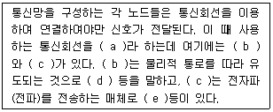
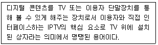
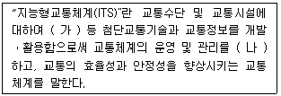
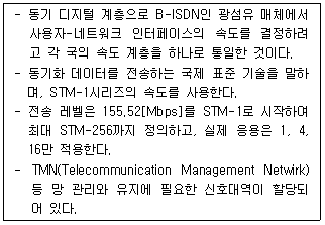
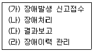
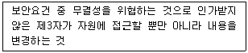
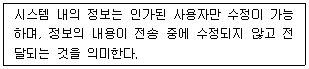
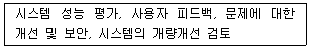
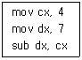
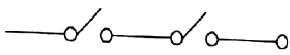

정보통신기사 (2022-03-12 기출문제)
1과목: 정보전송일반
1. 다음 중 전송 제어문자의 내용으로 옳은 것은?
- SYN : 문자 동기 유지
- STX : 해딩의 시작 및 텍스트의 시작
- ETX : 텍스트의 시작을 표시
- EOT : 전송시작 및 데이터 링크의 초기화 표시
(정답률: 69%)

2. 양자화 잡음의 개선 방법으로 틀린 것은?
- 양자화 스텝을 크게 한다.
- 비선형 양자화 방법을 사용한다.
- 선형양자화와 압신방식을 같이 사용한다.
- 양자화 스텝수가 2배로 증가할 때마다 6[dB]씩 개선된다.
(정답률: 61%)
3. 다음 중 동기식 전송(Synchronous Transmission)에 대한 설명으로 틀린 것은?
- 전송속도가 비교적 낮은 저속 통신에 사용한다.
- 진 블록(또는 프레임)을 하나의 비트열로 전송할 수 있다.
- 데이터 묶음 앞쪽에는 반드시 동기문자가 온다.
- 한 묶음으로 구성하는 글자들 사이에는 휴지 간격이 없다.
(정답률: 64%)
4. 다음 중 FEC(Forward Error Correction) 기법에서 사용하는 오류 정정부호가 아닌 것은?
- CRC
- LDPC
- Turbo Code
- Hamming Code
(정답률: 51%)
5. 다음 중 이동통신이나 위성통신에서 사용되는 무선 다윈 접속(Radio Multiple Access)방식에 해당되지 않는 것은?
- FDMA
- TDMA
- CDMA
- WDMA
(정답률: 69%)
6. 짝수 패리티 비트의 해밍코드로 0011011을 받았을 때(왼쪽에 있는 비트부터 수신됨), 오류가 정정된 정확한 코드는 무엇인가?
- 0111011
- 0011000
- 0101010
- 0011001
(정답률: 61%)
7. 다음 중 광 강도 변조의 설명으로 맞는 것은?
- 파장이 서로 다른 광 신호간에 상호 간섭을 받지 않는 변조 방식이다.
- 여러 광 신호를 하나의 광섬유에 전송하기 위해 행하는 변조 방식이다.
- 광 신호에 포함된 직류성분을 제거하기 위해 행하는 변조방식이다.
- 발광 디바이스의 휘도를 신호에 따라 변화시키는 휘도 변조 방식이다.
(정답률: 58%)
8. 5[kHz]의 음성신호를 재생시키기 위한 표본화 주기는?
- 225[μs]
- 200[μs]
- 125[μs]
- 100[μs]
(정답률: 64%)
9. 설계자가 감쇠 특성을 고려하여 통신시스템을 설계할 때 반영하지 않아도 되는 사항은?
- 수신기의 전자회로가 신호를 검출하여 해석할 수 있을 정도로 수신된 신호는 충분히 커야 한다.
- 오류가 발생하지 않을 정도로 신호는 잡음보다 충분히 커야 한다.
- Pair 케이블을 조밀하게 감을수록 비용이 낮고 성능은 좋아진다.
- 감쇠는 주파수가 증가함에 따라 증가하는 특성을 보인다.
(정답률: 72%)
10. 전리층을 이용한 통신에 가장 많이 사용되는 주파수대는?
- VLF대
- HF대
- VHF대
- UHF대
(정답률: 50%)
11. 다음 중 채널용량에 대한 설명으로 옳지 않은 것은?
- 통신용량이라고도 하며 단위로는 [bps]를 사용한다.
- 수신측에 전송된 정보량은 상호 정보량의 최대치이다.
- 채널용량을 증가시키기 위해서는 대역폭을 줄이고 S/N비를 증가시켜야 한다.
- 잡음이 있는 채널에서는 Shannon의 공식을 사용하여 채널 용량을 계산한다.
(정답률: 72%)
12. 다음 중 다윈접속 기술방식이 다른 것은?
- Token
- Polling
- CSMA/CD
- Round-robin
(정답률: 50%)
13. 이동통신망에서 발생하는 페이딩 중 고층 건물, 철탑 등 인공구조물에 의하여 발생하는 페이딩은?
- Long-term Fading
- Short-term Fading
- Rician Fading
- Mis-term Fading
(정답률: 50%)
14. 다음 중 디지털 통신망에서 발생하는 Slip에 대한 설명으로 옳지 않은 것은?
- 일종의 버퍼인 ES의 오버플로우나 언더플로우에 의한 데이터 손실을 Slip이라고 한다.
- Slip이 제어되지 않으면 프레임 동기 손실을 유발한다.
- 1프레임 단위로 발생하는 Slip을 Controlled Slop이라 한다.
- Slip을 방지하는 방법으로 SSB(Single Side Band)방법을 사용한다.
(정답률: 50%)
15. 증폭기와 정궤한 회로를 이용한 발진회로에서 증폭기의 이득을 A, 궤환율을 β라고 할 때, βA>1이면 출력되는 파형은 어떤 현상이 발생하는가?
- 출력되는 파형의 진동이 서서히 사라진다.
- 출력되는 파형은 진폭에 클리핑이 일어난다.
- 지속적으로 안정적인 파형이 발생한다.
- 출력되는 파형은 서서히 진폭이 작아진다.
(정답률: 69%)
16. 다음 중 상호변조왜곡 방지 대책으로 가장 적합한 것은?
- 입력 신호의 레벨을 높인다.
- 전송시스템에 FDM 방식을 사용한다.
- 송수신 장치를 선형영역에서 동작시킨다.
- 필터를 이용하여 통과대역 내의 신호를 걸러낸다.
(정답률: 46%)
17. 다음 중 UTP 케이블 특징이 틀린 것은?
- 차폐 기능을 지원
- 8가닥 선으로 구성
- 트위스트페어 케이블의 일종
- 전송길이는 최대 100[m] 이내
(정답률: 57%)
18. 다음 중 Flip-Flop과 관계가 없는 것은?
- RAM
- Decoder
- Conuter
- Register
(정답률: 50%)
19. 다음 중 레이더 또는 위성통신에 이용되며, Kn밴드, K밴드, Ku밴드, X밴드, L밴드 등 특수한 용어를 사용하여 밴드를 분류하는 파는 무엇인가?
- 단파
- 마이크로파
- 밀리미터파
- 초단파
(정답률: 72%)
20. 다음 문장의 괄호 a-b-c-d-e가 순서대로 바르게 짝지어진 것은?

- 토폴로지-중계기-스위치-교환기-증폭기
- 링크-집중화기-다중화기-MUX-안테나
- 네트워크-이더넷-무선통신망-전화선-발진기
- 전송매체-유도전송매체-비유도전송매체-유선-공기
(정답률: 60%)
2과목: 정보통신기기
21. 단말기에 마이크로프로세서를 내장하여 분산처리방식에 적절한 단말장치는?
- 전용단말장치
- 지능형단말장치
- 복합단말장치
- 범용단말장치
(정답률: 62%)
22. 다음 중 수신기의 성능 측정 변수에 해당하지 않는 것은?
- 감도(Sensitivity)
- 선택도(Selectivity)
- 안정도(Stability)
- 신뢰도(Reliability)
(정답률: 61%)
23. 다음 중 멀티미디어 기기의 특징으로 틀린 것은?
- 정보의 공유
- 정보의 디지털화
- 양방향성 서비스
- 인간과 컴퓨터의 독립성
(정답률: 79%)
24. 다음 중 CoIP 기술의 구성요소로 틀린 것은?
- 미디어 게이트웨이
- 시그널링 서버
- IP 터미널
- 구내 교환기
(정답률: 68%)
25. 무선송신기에서 주파수 체배기가 사용되는 목적은?
- 수정발진자의 주파수보다 더 낮은 주파수를 얻기 위해
- 수정발진자의 주파수보다 더 높은 주파수를 얻기 위해
- 수정발진자의 주파수 허용편차를 개선하기 위해
- 수정발진자의 주파수를 정수배 감소시키기 위해
(정답률: 60%)
26. 다음 중에서 멀티미디어 단말의 구성요소가 아닌 것은?
- 처리장치
- 저장장치
- 매체 전송장치
- 오디오, 비디오 캡쳐 장치
(정답률: 35%)
27. 다음 중 시스템의 잡음지수와 등가잡음온도에 대한 설명으로 틀린 것은?
- 잡음지수는 시스템에 입력되는 잡음대 시스템에서 출력되는 잡음과의 비이다.
- 이상적인 장치의 잡음지수는 1[0dB]이다.
- 등가잡음온도는 잡음지수값에 의해 영향을 받는다.
- 등가잡음온도계산에 사용되는 시스템의 상온기준온도는 275°[K]이다.
(정답률: 55%)
28. 다음 중 ZigBee 통신방식의 특징으로 옳지 않은 것은?
- 저전력 구내무선통신기술이다.
- 근거리 고속통신에 적합하다.
- 성형, 망형 등 다양한 네트워크 토폴로지를 지원한다.
- 네트워크의 안정성을 요구하는 RF 어플리케이션에 사용된다.
(정답률: 57%)
29. 송수신할 데이터가 있는 단말기에만 타임슬롯(time slot)을 할당하는 방식은 무엇인가?
- 주파수분할 다중화 방식
- 부호화 방식
- 변조 방식
- 통계적 시분할 다중화 방식
(정답률: 69%)
30. 다음 중 고속의 송신 신호를 다수의 직교하는 협대역 반송파로 다중화시키는 변조방식은?
- EBCDIC
- CDMA
- OTDM
- OFDM
(정답률: 72%)
31. 기존의 아날로그 카메라에 설치되어 있는 동축케이블을 활용해 고화질 영상전송이 가능한 디지털 신호 전송방식은?
- DNR
- HD-SDI
- HDMI
- WDR
(정답률: 59%)
32. 다음 중 주파수 분할 다중화(FDM)에 대한 설명으로 옳지 않은 것은?
- 채널간의 완충 지역으로 가드밴드(Guard Band)가 있어 대역폭이 낭비가 된다.
- 저속의 Data를 각각 다른 주파수에 변조하여 하나의 고속 회선에 신호를 싣는 방식이다.
- 주파수 분할 다중화기는 전송하려는 신호에서 필요한 대역폭 보다 전송 매체의 유효 대역폭이 클 경우에 가능하다.
- 각 채널은 전용 회선처럼 고속의 채널을 독점하는 것처럼 보이지만 실제로 분배된 시간만 이용한다.
(정답률: 49%)
33. 디지털 화상회의 시스템에서 QCIF 포맷을 흑백화면으로 25프레임, 8비트로 샘플링을 한다면 데이터 전송률은 약 얼마인가?
- 5[Mbps]
- 10[Mbps]
- 20[Mbps]
- 40[Mbps]
(정답률: 46%)
34. 일반적인 모뎀의 기능에 멀티플렉서(Multiplexer)가 혼합된 형태로서 대체로 4개 이하의 채널을 다중화하고자 할 때 사용되는 모뎀으로 가장 적절한것은?
- 광대역 모뎀
- 단거리 모뎀
- 멀티포트 모뎀
- 멀티포인트 모뎀
(정답률: 64%)
35. 우리나라 DTV 표준에 관한 설명 중 틀린 것은?
- 오디오표준 : Dolby AC-3
- 영상표준 : MPEG-2
- 전송방식 : OFDM
- 채널당 대역폭 : 6[MHz]
(정답률: 62%)
36. 다음 중 CCTV의 기본 구성에 해당하지 않는 것은?
- 촬상 장치
- 전송 장치
- 스펙트럼 분석 장치
- 표시 장치
(정답률: 70%)
37. 다음 중 멀티미디어 서비스를 위한 요구사항과 거리가 먼 것은?
- 음성 정보의 고압축 알고리즘 기술
- 영상 정보의 Real Time 전송을 위한 고속 통신망의 구축
- 분산 환경의 통신 Protocol 및 Group 환경의 통신 Protocol
- 동적인 정보들 간의 동기화 속성을 부여할 수 있는 기술
(정답률: 48%)
38. IPTV 서비스의 구성요소 중 보기의 설명에 대한 것으로 적절한 것은?

- 셋탑박스
- 인코더
- 헤드엔드
- 방송소스
(정답률: 79%)
39. 다음 CATV의 구성 요소 중 가입자 설비로 컨버터, 홈 터미널, TV수상기 등으로 구성된 것은?
- 전송계
- 단말계
- 센터계
- 분배계
(정답률: 59%)
40. 다음 중 트래픽(Traffic)에 대한 설명으로 틀린 것은?
- 트래픽양 = 전화의 호수 × 점유시간
- 가입자가 통화를 위하여 발신한 호의 집합체이다.
- 1일 중 호가 가장 적게 발생한 1시간을 최번시라 한다.
- 통화 성공률 = (통화 성공한 호수 / 발생한 총 호수)×100%
(정답률: 71%)
3과목: 정보통신 네트워크
41. 국가 통합 교통체계 효율화법의 내용중 괄호 안에 들어갈 내용으로 적합한 것은?

- (가) 무선 및 유선통신, (나) 과학화, 자동화
- (가) 전자ㆍ제어 및 통신, (나) 과학화, 자동화
- (가) 전자ㆍ제어 및 통신, (나) 지능화, 자동화
- (가) 무선 및 유선통신, (나) 지능화, 자동화
(정답률: 57%)
42. OSI 7계층에서 물리적 연결을 이용해 신뢰성 있는 정보를 전송하려고 동기화, 오류제어, 흐름제어 등 역할을 하는 계층은?
- 데이터링크계층
- 물리계층
- 전송계층
- 네트워크계층
(정답률: 56%)
43. 세션(session) 서비스에서 세션 접속의 설정 및 해제에 필요한 절차의 기본 프로토콜 요소를 제공하는 것은?
- 핵(Kernel) 기능단위
- 절충 해제(Negotiated Release) 기능단위
- 반 이중(Half-Duplex) 기능단위
- 전 이중(Full-Duplex) 기능단위
(정답률: 50%)
44. 다음 중 ROADM(Reconfigurable Optical Add-Drop Multiplexer)이 OXC(Optical Cross Connect)에 비하여 갖는 최대 장점은?
- 파장 단위로 회선을 분기/결합이 가능하다.
- 스위칭 속도가 느리다.
- 전광/광전 변환이 필수적이다.
- 트래픽 상황 변화에 대처가 느리다.
(정답률: 69%)
45. 하나의 브로드캐스트 도메인에 너무 많은 장비가 속해 있는 경우에 발생하는 문제점이 아닌 것은?
- 보안에 취약함
- 네트워크 성능 저하
- 라우팅 테이블 증가
- 로드밴런싱의 어려움
(정답률: 53%)
46. 일반적으로 통신망의 크기(Network coverage)에 따라 통신망을 분류할 때 적절하지 않은 것은?
- LAN
- MAN
- WAN
- CAN
(정답률: 71%)
47. 패킷경로를 동적으로 설정하며, 일련의 데이터를 패킷단위로 분할하여 데이터를 전달하고, 목적지 노드에서는 패킷의 재순서화와 조립과정이 필요한 방식은?
- 회선교환방식
- 메시지교환방식
- 가상회선방식
- 데이터그램방식
(정답률: 57%)
48. 다음 중 TCP 프레임의 헤더 구조에 대한 설명으로 틀린 것은?
- 순차 번호(Sequence Number) 필드는 송신 TCP로부터 수신 TCP로 송신되는 데이터 스트림 중 마지막 바이트를 지정한다.
- 응답 번호(Acknowledgement Number)는 응답제어 비트가 설정되어 있을 때에만 제공된다.
- 헤더 길이(HLEN)는 TCP Segment에 있는 헤더의 길이를 4바이트 워드 단위로 나타낸다.
- Window Size는 수신부가 응답필드에서 지정한 번호부터 수신할 수 있는 바이트의 수를 표시한다.
(정답률: 47%)
49. ATM에서 기본 패킷 단위인 셀의 크기는?
- 32바이트
- 53바이트
- 64바이트
- 1,024바이트
(정답률: 48%)
50. 다음 중 통신 프로토콜의 주요 기능이 아닌 것은?
- 송신지 및 수신지 주소 지정
- 전송 메시지의 생성 및 캡슐화
- 정보 흐름의 양을 조절하는 흐름 제어
- 정확하고 효율적인 전송을 위한 동기 맞춤
(정답률: 40%)
51. 다음 중 클라이언트/서버 네트워킹에 대한 설명으로 틀린 것은?
- 보안유지가 필요한 저비용, 소규모 네트워크에 사용된다.
- 네트워킹을 구성하는 각 장비에 특수한 역할이 부여된다.
- 대부분의 통신은 클라이언트와 서버사이에서 이루어진다.
- 피어투피어 네트워킹에 비해 성능, 확장성 측면에서 장점이 있다.
(정답률: 61%)
52. 다음 중 RIP(Routing Information Protocol)의 동작 특성이 아닌 것은?
- Distance Vector 알고리즘을 사용하여 최단 경로를 구한다.
- 링크 상태 라우팅에 근거를 둔 도메인 내 라우팅 프로토콜이다.
- 라우팅 정보의 기준인 서브네트워크의 주소는 클래스 A, B, C의 마스크를 기준으로 하여 라우팅 정보를 구성한다.
- 자신이 갖고 있는 라우팅 정보를 RIP 메시지로 작성하여 인접해 있는 모든 라우터에게 주기적으로 전송한다.
(정답률: 35%)
53. 캐리어 이더넷은 기존 LAN영역에 쓰이는 이더넷 기술을 전달망 또는 백본영역까지 확장시킨 기술이다. 다음 중 캐리어 이더넷이 기존 이더넷 기술의 단점을 보완하기 위하여 최우선적으로 고려한 사항은 무엇인가?
- 구축거리
- QoS
- 과금
- 망중립성
(정답률: 67%)
54. 다음 교환 방식 중 축적 교환 방식에 해당하지 않은 것은?
- 시분할 회선 교환 방식
- 메시지 교환 방식
- 가상회선 패킷 교환 방식
- 데이터그램 패킷 교환 방식
(정답률: 50%)
55. 이동통신 기지국의 섹터간 전파가 겹치는 지역에서 통화전환이 이루어질 때의 핸드오프를 무엇이라고 하는가?
- 하드 핸드오프(Hard Handoff)
- 소프트 핸드오프(Soft Handoff)
- 소프터 핸드오프(Softer Handoff)
- 미들 핸드오프(Middle Handoff)
(정답률: 58%)
56. 인터넷상에서 주소체계인 IPc4와 IPv6을 비교한 설명으로 옳지 않은 것은?
- IPv4는 32비트의 주소체계를 가지고 있다.
- IPv4는 헤더구조가 복잡하다.
- IPv4는 네트워크 크기나 호스트의 수에 따라 A, B, C, D, E클래스로 나누어진다.
- IPv4는 확실한 QoS(Quality of Service)가 보장된다.
(정답률: 55%)
57. 1분 동안 전송된 총 비트수가 100[bit]이고 이에 부가로 전송된 전송비트가 20[bit]이다. 이 때 이 회선의 코드(부호)효율은 약 얼마인가?
- 80[%]
- 83[%]
- 86[%]
- 89[%]
(정답률: 55%)
58. 이더넷 네트워크에서 VLAN 표준은?
- IEEE 802.1D
- IEEE 802.1P
- IEEE 802.1Q
- IEEE 802.1X
(정답률: 45%)
59. 수직안테나와 수평안테나의 조합으로 다른 전파를 발사하여 페이딩을 경감하는 다이버시티는?
- 공간 다이버시티(Space diversity)
- 편파 다이버시티(Polarization diversity)
- 주파수 다이버시티(Frequency diversity)
- 시간 다이버시티(Time diversity)
(정답률: 57%)
60. 다음은 무엇에 대한 설명인가?

- SDH(synchronous digital hierarchy)
- PDH(plesiochronous digital hierarchy)
- OTN(optical transprt network)
- SONET(synchronous optical network)
(정답률: 55%)
4과목: 정보시스템 운용
61. 다음 중 사용자 A가 사용자 B에게 메시지에 디지털 서명과 메시지 암호화하여 전송하려 한다면 어떤 순서로 A, B의 공개키와 A, B의 비밀키를 사용하여 암호화하여야 하는가?
- B의 공개키→A의 공개키
- A의 공개키→B의 비밀키
- A의 비밀키→B의 공개키
- B의 비밀키→A의 비밀키
(정답률: 55%)
62. 네트워크 관리 및 네트워크의 장치와 그들의 동작을 감시, 관리하는 프로토콜은?
- SMTP
- SNMP
- SIP
- SDP
(정답률: 64%)
63. 다음 중 정보통신망 운영계획에 포함되어야 할 내용이 아닌 것은?
- 연간, 월간 장기계획
- 주간, 일간 단기계획
- 최적 회선망의 설계조건 검토
- 작업내용, 작업량, 우선순위, 주기, 운전소요시간, 운전형태 및 시스템구성
(정답률: 54%)
64. 리피터(Repeater)가 동작하는 OSI 7 Layer의 계층은?
- 물리 계층
- 응용 계층
- 네트워크 계층
- 데이터링크 계층
(정답률: 63%)
65. 서비스의 중단을 야기하는 장애구간을 탐색하기 위하여, 각 구간을 질분하여 시험하는 루프백(Loop-Back) 시험에 대한 설명으로 잘못된 것은?
- 루프백의 제어방법에는 자국(Local)제어방법과 원격국(Romote)제어 방법이 있다.
- 원격루프백은 자국으로부터 수신한 신호를 자국으로 돌려주는 것을 말한다.
- 루프백 시험을 위해서는 패턴을 발생하고 분석하는 계측기를 사용하여야 한다.
- 루프백이 수행되는 지점은 각 통신시스템에서 신호의 입력 및 출력이 이루어지는 지점이다.
(정답률: 60%)
66. 정보통신 시스템 기본설계에서 프로그램 설계가 아닌 것은?
- 톱-다운 설계
- 복합 설계
- 데이터 중심형 설계
- 하드웨어 설계
(정답률: 56%)
67. 정보통신시스템 운용 중 장애 발생 시 대응절차로 적합하게 나열한 것은?

- (가)-(나)-(다)-(라)
- (가)-(다)-(나)-(라)
- (나)-(다)-(가)-(라)
- (나)-(가)-(라)-(다)
(정답률: 77%)
68. 보안 위협의 유형 중 다음 내용에 해당하는 것은?

- 변조
- 흐름차단
- 가로채기
- 계정 탈취
(정답률: 68%)
69. 다음 중 MIB(Management Information Base)에 대한 설명으로 옳지 않은 것은?
- 관리하려는 요소에 관한 정보를 포함하는 데이터베이스
- 각각의 관리하려는 자원은 객체로 표현되는데 이들 객체들의 구조적인 모임
- MIB에 저장된 객체 값은 읽기 전용
- SMI에 의하여 데이터의 형태와 자원들이 어떻게 나타내어지고 이름 붙여지는지를 정의
(정답률: 60%)
70. 시스템의 평균 수리 소요시간을 의미하는 것은?
- MTBF
- MTTF
- MTTR
- Availability
(정답률: 63%)
71. 정보통신보안의 요건 중 다음 내용에 해당하는 것은?

- 무결성
- 기밀성
- 가용성
- 인증
(정답률: 70%)
72. 정보통신시스템에서 신뢰성의 척도로 가동률을 사용하고 있다. MTBF = 22시간, MTTR = 2시간일 때 가동률은 얼마인가? (단, 소수점 3번째 자리에서 반올림한다.)
- 0.98
- 0.96
- 0.94
- 0.92
(정답률: 59%)
73. 정보통신시스템 분석의 목적에 관한 내용으로 맞지 않는 것은?
- 새로운 시스템 설계의 기초자료를 얻는다.
- 비능률적이고 낭비적인 요소와 문제점을 발견할 수 있다.
- 시스템 또는 각 구성요소에 장애가 발생했을 때 회복을 위한 수리의 간편성, 정기적인 점검자료를 얻는다.
- 전산화에 따른 효과분석을 할 수 있는 기초자료를 얻는다.
(정답률: 44%)
74. 시스템의 총 운용 시간 중 정상적으로 가동된 시간의 비율을 의미하는 것은?
- MTBF
- MTTF
- MTTR
- Avaliabilty
(정답률: 48%)
75. 정보통신망에서 채널용량은 샤논의 정리와 나이퀴스트의 전송률에 의해 정리할 수 있는데 샤논과 나이퀴스트 정리에서 채널용량과 전송률을 높이기 위한 공통점은 무엇인가?
- 대역폭
- 수파수
- 데이터의 비트수
- 신호대 잡음비
(정답률: 60%)
76. 다음 WLAN 규격 중 가장 속도가 빠른 규격은?
- IEEE 802.11a
- IEEE 802.11b
- IEEE 802.11g
- IEEE 802.11n
(정답률: 61%)
77. 어떤 시스템에서 신뢰도를 높이기 위해 중복시스템을 채용하고 있다. 이 시스템에서 유니트 1 또는 3이 고장을 일으키면 자동적으로 유니트2 또는 4로 바뀐다. 유니트1, 2, 3, 4의 신뢰도를 각각 [0.8],[0.8],[0.9],[0.9]라 할 때 이 시스템의 신뢰도는 얼마인가?
- 0.9684
- 0.9504
- 0.5184
- 0.0684
(정답률: 57%)
78. 시스템을 구성하는 각 장비의 기능에 따라 정상상태를 시험할 목적으로 사용되는 프로그램은?
- 프로그램 보수 프로그램
- 장애해석 프로그램
- 시스템 가동 통계 프로그램
- 보수시험 프로그램
(정답률: 57%)
79. 네트워크 상에 발생한 트래픽을 제어하며, 네트워크 상의 경로 설정 정보를 가지고 최적의 경로를 결정하는 장비는?
- 브리지
- 라우터
- 리피터
- 게이트웨이
(정답률: 70%)
80. 정보통신시스템 계획 중 아래 내용에 해당하는 단계는?

- 시스템 설계
- 시스템 구현
- 시스템 시험
- 시스템 유지보수
(정답률: 60%)
5과목: 컴퓨터일반 및 정보설비기준
81. 다음 중 마이크로프로세서에 대한 설명으로 옳지 않은 것은?
- 마이크로프로세서는 CPU의 여러 형태 중 하나로 중앙제어장치를 단일 IC에 집적한 반도체 소자이다.
- 마이크로프로세서는 연산부와 제어부, 레지스터부로 구성되어 있다.
- 마이크로프로세서는 MPU(Micro Processing Unit)라 부르기도 한다.
- 마이크로프로세서는 CPU의 기능과 일정한 용량의 캐쉬 및 메인 메모리 등의 기억장치, 입출력제어회로 등을 단일의 칩에 모두 내장한 것을 말한다.
(정답률: 50%)
82. 다음 중 중앙처리장치(CPU)에 대한 설명으로 옳지 않은 것은?
- 인간의 두뇌에 해당하는 역할을 수행하는 장치이다.
- 각종 프로그램을 해독한 내용에 따라 실제 연산을 수행한다.
- 연산장치와 기억장치로 구성된다.
- 컴퓨터 내의 각 장치들을 제어, 지시, 감독하는 기능을 수행한다.
(정답률: 59%)
83. 다음 명령의 수행 결과값은?

- 1.75
- 3
- 11
- 28
(정답률: 66%)
84. 원시프로그램(source program)을 컴파일 하여 얻어지는 프로그램은?
- 실행 프로그램
- 목적 프로그램
- 유틸리티 프로그램
- 시스템 프로그램
(정답률: 63%)
85. 지능형 홈네트워크 설비 설치 및 기술기준에서 공용부분 홈네트워크 설비의 설치기준에 맞지 않는 것은?
- 단지서버는 상시 운용 및 조작을 위하여 별도의 잠금장치를 설치하지 아니한다.
- 원격검침시스템은 각 세대별 원격검침장치가 정전 등 운용시스템의 동작 불능 시에도 계량이 가능하여야 한다.
- 집중구내통신실은 독립적인 출입구를 설치하여야 한다.
- 단지네트워크장비는 집중구내통신실 또는 통신배관실에 설치하여야 한다.
(정답률: 68%)
86. 16진수 AB를 10진수로 표현한 값은?
- 169
- 170
- 171
- 172
(정답률: 65%)
87. 다음 중 프로그램의 이식성(Portability)을 가능하게 하는 주소지정 방식은 무엇인가?
- 상대주소지정(Relative addressing)
- 간접주소지정(Indirect addressing)
- 직접주소지정(Direct addressing)
- 베이스레지스터 주소지정(Base-register addressing)
(정답률: 36%)
88. 국선 수용 회선이 100회선 이하인 주배선반의 접지저항 허용범위는 얼마인가?
- 1,000[Ω] 이하
- 100[Ω] 이하
- 10[Ω] 이하
- 1[Ω] 이하
(정답률: 49%)
89. 다음 스위칭 회로의 논리식으로 옳은 것은?

- F = A + B
- F = A ㆍ B
- F = A - B
- F = A / (B + A)
(정답률: 70%)
90. 기억된 내용의 일부를 이용하여 기억되어 있는 데이터에 직접 접근하여 정보를 읽어내는 장치는?
- 가상기억장치(Virtual Memory)
- 연관기억장치(Associative Memory)
- 캐시 메모리(Cache Memory)
- 보조기억장치(Auxiliary Memory)
(정답률: 59%)
91. 다음 중 시스템 소프트웨어에 대한 설명으로 틀린 것은?
- 시스템 소프트웨어와 응용 소프트웨어로 구별할 수 있다.
- 시스템 소프트웨어는 관리, 지원, 개발 등으로 분류할 수 있다.
- 스프레드시트, 데이터베이스 등은 대표적인 시스템 소프트웨어이다.
- 운영체제는 대표적인 시스템 소프트웨어이다.
(정답률: 69%)
92. 기간통신사업을 경영하려는 자는 누구의 허가를 받아야 하는가?
- 과학기술정보통신부장관
- 방송통신위원장
- 기간통신사업자연합회
- 과학기술정보통신부 공익성심사위원회
(정답률: 64%)
93. Open Source로 개방되어 사용자가 변경이 가능한 운영체제는?
- Mac OS
- MS-DOS
- OS/2
- Linux
(정답률: 71%)
94. 다음 중 맨홀 또는 핸드홀의 설치기준으로 맞지 않는 것은?
- 맨홀 또는 핸드홀은 케이블의 설치 및 유지ㆍ보수 등의 작업 시 필요한 공간을 확보할 수 있는 구조로 설계하여야 한다.
- 맨홀 또는 핸드홀은 케이블의 설치 및 유지ㆍ보수 등을 위한 차량출입과 작업이 용이한 위치에 설치하여야 한다.
- 맨홀 또는 핸드홀 간의 거리는 350[m] 이내로 하여야 한다.
- 맨홀 또는 핸드홀에는 주변 실수요자용 통신케이블을 분기할 수 있는 인입 관로 및 접지시설 등을 설치하여야 한다.
(정답률: 62%)
95. 파일 관리자는 파일 구조에 따라 각기 다른 접근 방법으로 관리한다. 다음 중 저장공간의 효율성이 가장 높은 파일 구조는 어느것인가?
- 직접 파일(Direct File)
- 순차 파일(Sequential File)
- 색인 순차 파일(Indexed Sequential File)
- 분할 파일(Partitioned File)
(정답률: 46%)
96. 다음 중 감리원이 공사업자가 설계도서 및 관련 규정의 내용에 적합하지 아니하게 공사를 시공하는 경우 취할 수 있는 조치는 무엇인가?
- 하도급인과 협의하여 설계변경 명령을 할 수 있다.
- 발주자의 동의를 얻어 공사중지 명령을 할 수 있다.
- 수급인에게 보고하고 공사업자를 교체할 수 있다.
- 한국정보통신공사협회에 신고하고 공사업자에 과태료를 부과한다.
(정답률: 66%)
97. 다음 중 컴퓨터 네트워크의 라우팅 알고리즘의 하나로서 수신되는 링크를 제외한 나머지 모든 링크로 패킷을 단순하게 복사ㆍ전송하는 것을 무엇이라고 하는가?
- Flooding
- Filtering
- Forwarding
- Listening
(정답률: 57%)
98. 공개된 장소에서 영상정보처리기기의 설치ㆍ운영할 수 있는 경우가 아닌 것은?
- 유동인구 및 시장조사를 위하여 필요한 경우
- 영유아의 안전과 어린이집의 보안을 위하여 설치하는 경우
- 범죄의 예방 및 수사를 위하여 필요한 경우
- 시설안전 및 화재 예방을 위하여 필요한 경우
(정답률: 69%)
99. 다음 중 정보통신공사업의 운영에 대한 설명으로 옳지 않은 것은?
- 공사업을 양도할 수 있다.
- 공사업자인 법인 간에 합병할 수 있다.
- 공사업자인 법인을 분할하여 설립할 수 있다.
- 합병에 의하여 설립된 법인은 소멸되는 법인의 지위를 승계하지 못한다.
(정답률: 58%)
100. 정보통신망의 안정성 및 정보의 신뢰성을 확보하기 위한 정보보호지침에 포함되지 않는 사항은?
- 정보보호시스템의 설치ㆍ운영 등 기술적ㆍ물리적 보호조치
- 정보의 불법 유출ㆍ변조ㆍ삭제 등의 방지하기 위한 기술적 보호조치
- 정보통신망의 지속적인 이용 가능 상태 확보하기 위한 기술적ㆍ물리적 보호조치
- 전문보안업체를 통한 위탁관리 등 관리적 보호조치
(정답률: 64%)